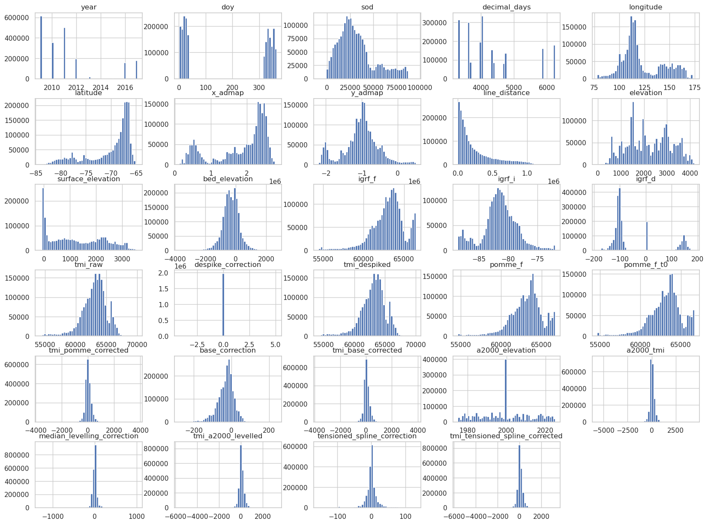
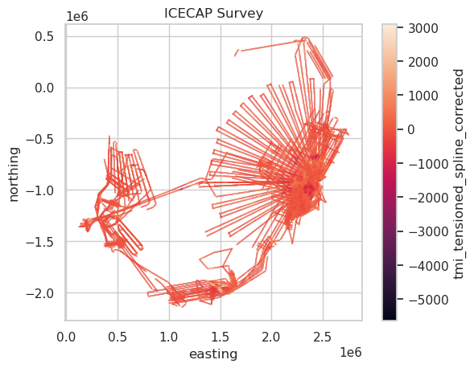
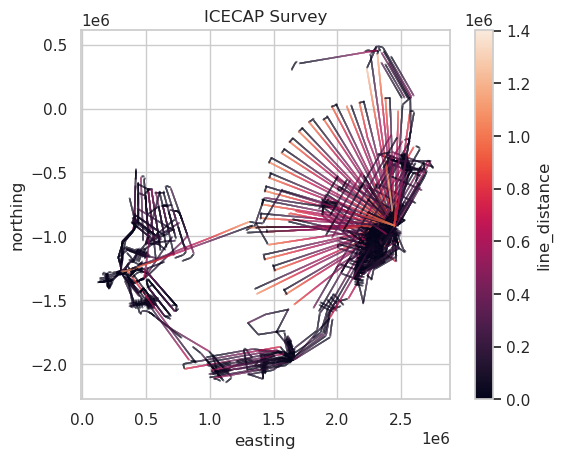

Downloading the ICECAP airborne magnetic survey to use in the notebooks#
This is the reprocessed dataset from Aitken and Ramos 2019, which corresponds to the paper Aitken et al. 2020
[1]:
# %load_ext autoreload
# %autoreload 2
import pandas as pd
import pooch
import seaborn as sns
import airbornegeo
sns.set_style("whitegrid")
Load data#
[2]:
import pathlib
import shutil
def preprocessing(fname, action, _pooch2):
fname = pathlib.Path(fname)
# Copy to the file to ***_on_data.txt
fname_processed = fname.with_stem(fname.stem + "_only_data")
shutil.copy(fname, fname_processed)
# Only recalculate if new download or the processed file doesn't exist yet
if action in ("download", "update") or not fname_processed.exists():
line_types = ["Line", "Tie", "Special", "Random"] # types of line permitted
def cutlines(file, LINE):
list = []
with pathlib.Path.open(file) as f:
next(f) # skip header row
for _i, line in enumerate(f):
if LINE[0] not in line: # noqa: SIM102
if LINE[1] not in line: # noqa: SIM102
if LINE[2] not in line: # noqa: SIM102
if LINE[3] not in line:
list.append(line)
return list
line_list = cutlines(fname, line_types)
with pathlib.Path.open(fname_processed) as fo:
for i in range(len(line_list)):
fo.write("%s", line_list[i])
return str(fname_processed)
path = pooch.retrieve(
url="https://data.aad.gov.au/eds/api/dataset/00c5e647-ba35-4073-992b-f98ceaee6887/object/download?prefix=AAS_4460_Reprocessed_ICECAP_Magnetic_Data%2FDistribution%2FICECAP_IandII_TMI_100m_A2000.txt",
fname="ICECAP_IandII_TMI_100m_A2000.txt",
path=f"{pooch.os_cache('airbornegeo')}",
known_hash="97d220b179049a0ed3abc8e348bab3cb3a48ab4a4d56dd2ffa7ed3836f649eae",
progressbar=True,
processor=preprocessing,
)
path
[2]:
'/home/sungw937/.cache/airbornegeo/ICECAP_IandII_TMI_100m_A2000_only_data.txt'
[3]:
data_df = pd.read_csv(
path,
sep=r"\s+", # split on whitespace
skiprows=2, # skip the first rows which contains column names
# nrows=1000e3,
na_values=["*"], # replace -9999.0 with NaN
names=[
"line_id",
"fid",
"year",
"doy",
"sod",
"decimal_days",
"longitude",
"latitude",
"x_admap",
"y_admap",
"line_distance",
"elevation",
"surface_elevation",
"bed_elevation",
"igrf_f",
"igrf_i",
"igrf_d",
"tmi_raw",
"despike_correction",
"tmi_despiked",
"pomme_f",
"pomme_f_t0",
"tmi_pomme_corrected",
"base_correction",
"tmi_base_corrected",
"a2000_elevation",
"a2000_tmi",
"median_levelling_correction",
"tmi_a2000_levelled",
"tensioned_spline_correction",
"tmi_tensioned_spline_corrected",
],
)
data_df
[3]:
| line_id | fid | year | doy | sod | decimal_days | longitude | latitude | x_admap | y_admap | ... | pomme_f_t0 | tmi_pomme_corrected | base_correction | tmi_base_corrected | a2000_elevation | a2000_tmi | median_levelling_correction | tmi_a2000_levelled | tensioned_spline_correction | tmi_tensioned_spline_corrected | |
|---|---|---|---|---|---|---|---|---|---|---|---|---|---|---|---|---|---|---|---|---|---|
| 0 | ASB_JKB0a_R16Ta.1 | 0 | 2009.0 | 26.0 | 63240.30 | 3313.731948 | 96.154742 | -74.379667 | 1745030.71 | -188176.46 | ... | 58787.75 | -18.38 | 0.21 | -18.58 | NaN | NaN | NaN | NaN | NaN | NaN |
| 1 | ASB_JKB0a_R16Ta.1 | 100 | 2009.0 | 26.0 | 63241.35 | 3313.731960 | 96.151627 | -74.379405 | 1745070.64 | -188084.77 | ... | 58787.36 | -11.65 | 0.20 | -11.85 | 2020.03 | -21.21 | 0.00 | -21.21 | -67.25 | -88.46 |
| 2 | ASB_JKB0a_R16Ta.1 | 200 | 2009.0 | 26.0 | 63242.40 | 3313.731972 | 96.148500 | -74.379152 | 1745109.44 | -187992.61 | ... | 58786.87 | -5.45 | 0.19 | -5.64 | 2020.03 | -3.20 | 0.00 | -3.20 | -67.25 | -70.45 |
| 3 | ASB_JKB0a_R16Ta.1 | 300 | 2009.0 | 26.0 | 63243.45 | 3313.731984 | 96.145365 | -74.378907 | 1745147.40 | -187900.10 | ... | 58786.35 | 0.00 | 0.18 | -0.17 | 2020.03 | 13.57 | 0.00 | 13.57 | -67.25 | -53.68 |
| 4 | ASB_JKB0a_R16Ta.1 | 400 | 2009.0 | 26.0 | 63244.50 | 3313.731997 | 96.142225 | -74.378667 | 1745184.88 | -187807.39 | ... | 58785.80 | 4.40 | 0.17 | 4.24 | 2020.03 | 28.90 | 0.00 | 28.90 | -67.25 | -38.35 |
| ... | ... | ... | ... | ... | ... | ... | ... | ... | ... | ... | ... | ... | ... | ... | ... | ... | ... | ... | ... | ... | ... |
| 2035267 | WSB_JKB2h_R39b_magfld.1 | 44000 | 2012.0 | 319.0 | 3729.60 | 4701.043167 | 123.397372 | -75.145177 | 1392714.89 | -918234.63 | ... | 62671.43 | 22.74 | 38.32 | -15.58 | 2018.19 | 13.14 | 31.34 | 44.47 | 1.57 | 46.04 |
| 2035268 | WSB_JKB2h_R39b_magfld.1 | 44100 | 2012.0 | 319.0 | 3730.84 | 4701.043181 | 123.395690 | -75.144409 | 1392814.63 | -918241.74 | ... | 62671.65 | 23.58 | 38.32 | -14.73 | 2018.19 | 13.59 | 31.34 | 44.93 | 1.57 | 46.50 |
| 2035269 | WSB_JKB2h_R39b_magfld.1 | 44200 | 2012.0 | 319.0 | 3732.09 | 4701.043196 | 123.394014 | -75.143640 | 1392914.36 | -918249.03 | ... | 62671.87 | 24.44 | 38.31 | -13.87 | NaN | NaN | NaN | NaN | NaN | NaN |
| 2035270 | WSB_JKB2h_R39b_magfld.1 | 44300 | 2012.0 | 319.0 | 3733.35 | 4701.043210 | 123.392345 | -75.142871 | 1393014.07 | -918256.55 | ... | 62672.10 | 25.00 | 38.31 | -13.31 | NaN | NaN | NaN | NaN | NaN | NaN |
| 2035271 | WSB_JKB2h_R39b_magfld.1 | 44400 | NaN | NaN | NaN | NaN | NaN | NaN | NaN | NaN | ... | NaN | NaN | NaN | NaN | NaN | NaN | NaN | NaN | NaN | NaN |
2035272 rows × 31 columns
[4]:
data_df.hist(bins=50, figsize=(20, 15));

[ ]:
# reproject to EPSG:3031 Polar Stereographic
data_df["easting"], data_df["northing"] = airbornegeo.reproject(
data_df.longitude,
data_df.latitude,
input_crs="EPSG:4326",
output_crs="EPSG:3031",
)
data_df
[6]:
data_df.describe()
[6]:
| year | doy | sod | decimal_days | longitude | latitude | x_admap | y_admap | line_distance | elevation | ... | base_correction | tmi_base_corrected | a2000_elevation | a2000_tmi | median_levelling_correction | tmi_a2000_levelled | tensioned_spline_correction | tmi_tensioned_spline_corrected | easting | northing | |
|---|---|---|---|---|---|---|---|---|---|---|---|---|---|---|---|---|---|---|---|---|---|
| count | 2.033109e+06 | 2.033109e+06 | 2.033109e+06 | 2.033109e+06 | 2.033109e+06 | 2.033109e+06 | 2.033109e+06 | 2.033109e+06 | 2.033109e+06 | 2.033109e+06 | ... | 2.033054e+06 | 2.033035e+06 | 2.031121e+06 | 2.030974e+06 | 2.030839e+06 | 2.030839e+06 | 2.030839e+06 | 2.030839e+06 | 2.033109e+06 | 2.033109e+06 |
| mean | 2.011264e+03 | 1.780806e+02 | 3.167995e+04 | 4.291931e+03 | 1.224337e+02 | -7.024648e+01 | 1.843696e+06 | -1.021042e+06 | 2.584102e+05 | 2.214694e+03 | ... | -3.099534e+01 | 3.931846e+01 | 1.999788e+03 | 3.731678e+01 | -1.788569e+00 | 3.554183e+01 | -1.697305e-01 | 3.537211e+01 | 1.793490e+06 | -9.932379e+05 |
| std | 2.570041e+00 | 1.611675e+02 | 2.018982e+04 | 8.943363e+02 | 2.117820e+01 | 4.492817e+00 | 7.398809e+05 | 5.000740e+05 | 2.703552e+05 | 9.399281e+02 | ... | 4.574396e+01 | 2.629324e+02 | 1.307855e+01 | 2.589660e+02 | 5.991359e+01 | 2.522648e+02 | 1.977529e+01 | 2.522225e+02 | 7.197332e+05 | 4.864564e+05 |
| min | 2.009000e+03 | 1.000000e+00 | -9.294290e+03 | 3.298607e+03 | 7.762933e+01 | -8.416519e+01 | 1.244714e+05 | -2.204780e+06 | 0.000000e+00 | -4.287000e+01 | ... | -2.770500e+02 | -3.684830e+03 | 1.975030e+03 | -5.663940e+03 | -1.305230e+03 | -5.641570e+03 | -1.557100e+02 | -5.646760e+03 | 1.210819e+05 | -2.144742e+06 |
| 25% | 2.009000e+03 | 2.000000e+01 | 1.754473e+04 | 3.640523e+03 | 1.089891e+02 | -7.228444e+01 | 1.456651e+06 | -1.248410e+06 | 5.740000e+04 | 1.479870e+03 | ... | -5.477000e+01 | -8.809000e+01 | 1.989620e+03 | -9.036000e+01 | -2.109000e+01 | -8.802000e+01 | -6.010000e+00 | -8.794000e+01 | 1.416985e+06 | -1.214415e+06 |
| 50% | 2.011000e+03 | 3.700000e+01 | 2.726331e+04 | 4.021447e+03 | 1.152084e+02 | -6.818261e+01 | 2.182220e+06 | -9.886312e+05 | 1.494000e+05 | 2.112060e+03 | ... | -2.458000e+01 | 8.610000e+00 | 2.000000e+03 | 8.900000e+00 | 0.000000e+00 | 8.100000e+00 | -1.900000e-01 | 8.480000e+00 | 2.122796e+06 | -9.617098e+05 |
| 75% | 2.012000e+03 | 3.370000e+02 | 4.020095e+04 | 4.710049e+03 | 1.407825e+02 | -6.698804e+01 | 2.408385e+06 | -7.566044e+05 | 3.757000e+05 | 2.966650e+03 | ... | -3.760000e+00 | 1.490500e+02 | 2.009230e+03 | 1.518500e+02 | 1.990000e+01 | 1.459000e+02 | 5.215000e+00 | 1.456200e+02 | 2.342802e+06 | -7.360014e+05 |
| max | 2.017000e+03 | 3.650000e+02 | 9.570950e+04 | 6.245363e+03 | 1.749176e+02 | -6.473134e+01 | 2.826609e+06 | 5.012924e+05 | 1.404500e+06 | 4.198810e+03 | ... | 2.394800e+02 | 3.859790e+03 | 2.025000e+03 | 4.433030e+03 | 1.016240e+03 | 3.258350e+03 | 1.310600e+02 | 3.249710e+03 | 2.749638e+06 | 4.876417e+05 |
8 rows × 31 columns
[ ]:
data_df["line"] = data_df["line_id"]
survey = airbornegeo.Survey(data_df, line_column="line")
survey.unique_line_id()
data_df = survey.data
data_df.line.unique()
[8]:
ax = data_df[::10].plot.scatter(
"easting",
"northing",
c="tmi_tensioned_spline_corrected",
s=0.002,
title="ICECAP Survey",
)
ax.set_aspect("equal")

[9]:
ax = data_df[::10].plot.scatter(
"easting",
"northing",
c="line_distance",
s=0.002,
title="ICECAP Survey",
)
ax.set_aspect("equal")

[12]:
data_df.to_csv("../data/ICECAP_magnetic_survey.csv", index=False)
[ ]: